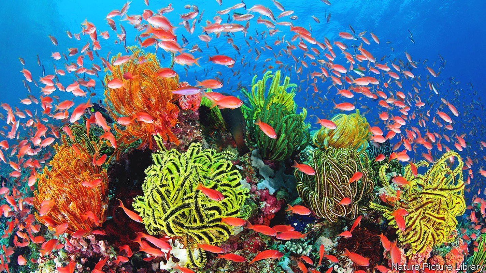
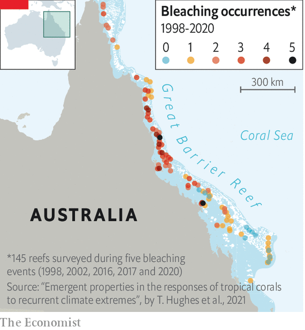

A bit of pre-emptive tinkering by people might help to save them

It is not news that coral reefs are in hot water. Corals, which are sessile animals related to sea anemones, host within their tissues algae that provide them with both food and their tourist-attracting colours. But as temperatures rise, the photosynthetic mechanisms of these algae go haywire. Instead of molecular oxygen, the normal waste product of photosynthesis, they start generating highly reactive and therefore toxic oxygen-rich compounds, such as peroxides. If they do this to excess, their hosts expel them, bleaching the coral concerned white.
Bleached corals can linger for a while, but starved of their symbionts’ supply of nutrients they are vulnerable to disease. Eventually, if the temperature does not drop far enough to permit the algae to be readmitted, they die.
And the world is getting warmer. As a consequence, the amount of coral in it has fallen since 1980 by between 30% and 50%.
Locally, things can be yet more dramatic. In just three years (between 2015 and 2018) Australia’s Great Barrier Reef lost more than 30% of its corals to death-by-bleaching. Surveys conducted this March showed that another Barrier Reef bleaching event is now under way. This instance is particularly worrying because it is the first to take place during a Pacific cooling event called La Niña—rather than during either its warming opposite, El Niño, or an intermediate period between the two.
These losses affect more than just tourists. Coral reefs are important parts of the world’s ecology. They host a third of multicellular marine species, including many commercially important fish. They also provide free coastal defences. Cities such as Cancun, Honolulu and Miami rely on them to keep the waves at bay. According to a study published in 2014 by Robert Costanza, an economist at University College, London, such benefits have a value of up to $10trn a year. Preserving reefs is thus of practical as well as aesthetic importance. So something needs to be done to stop heat-induced bleaching.
One approach is to identify species that are already heat-resistant and transfer them to reefs which are at risk. Some of the most spectacular examples of heat-resilient coral come from sites in the Gulf of Aqaba at the northern tip of the Red Sea, which is one of the hottest places on the planet. Several coral species found here can weather heat that would lead to mass bleaching elsewhere. A study published in 2021 by Romain Savary of the Swiss Federal Institute of Technology in Lausanne showed that a particular Red Sea reef-builder called Stylophora pistillata was able to withstand rises in excess of 5°C above the 27°C at which it normally lives—a greater increase than Earth is expected to face this century.
Similar pockets of heat resistance might be expected to have evolved elsewhere, too. Anne Cohen of the Woods Hole Oceanographic Institution, in Massachusetts, is responsible for a newly launched project which sets out to identify “super reefs” of this sort around the world. Using a mix of genetic analysis and hydrologic modelling, she aims to find reefs that are heat-resistant and genetically diverse, and therefore potentially able to restore neighbouring bleached sites to their former glory. She then hopes to expand protections for these reefs, in order to increase their chances of survival as heat-resistant resources for the future.
The evolution of resilience to heat is not, though, merely a matter of geography. It has also been found around the world in corals living cheek-by-jowl with more vulnerable specimens. This suggests its origins are complex. Christian Voolstra of the University of Konstanz, in Germany (who is also a co-author of Dr Savary’s paper), is leading a project intended to identify the responsible parts of a coral’s genome.
Some don’t like it hot
To do this he subjects a range of corals to intense blasts of heat, to see how they fare. While this 18-hour stress test, known as cbass (Coral Bleaching Automated Stress System), cannot capture the full effects of long-term bleaching, his hope is that the most bleach-resistant corals will nevertheless show their mettle in it.
Having established which corals are resilient, the next step is to search for genes or genetic variants that are shared by such corals but are absent from others. Dr Voolstra’s initial studies lead him to believe just a few genes will indeed turn out to be responsible. And although some will be geographically specific, he expects others will be found all over the world.
Further evidence points in that direction, too. In 2020 Phillip Cleves of Stanford University published work which showed that knocking out one particular gene in a species called Acropora millepora significantly reduces its ability to withstand heat. If resilience genes like these could be catalogued, and their presence identified in the field, that would allow researchers to identify resilient corals much more quickly than cbass can. This might be done using either some easily spotted biochemical consequence of their presence (a so-called biomarker), or one of the new generation of hand-held gene-sequencing devices now coming onto the market.
Even if the full genetic complexity of heat resistance can be elucidated, though, other mysteries will remain. Certain corals are able to survive heat that kills their closest cousins as well as their unrelated neighbours. This has led to speculation that heat-resistance can also be conferred on corals by symbiotic organisms—either particular types of their companion algae, or perhaps the bacteria that collectively constitute their “microbiome”.
It would make a lot of sense from both the coral and the algal point of view for corals’ algal symbionts to evolve more robust mechanisms of photosynthesis, which do not misbehave at high temperatures. Presumably, given time and continued global warming, that would happen naturally. But it might be possible to give the process a helping hand. Indeed, in a paper published in 2020, a group led by Madeleine van Oppen of Melbourne University showed it was possible to make a palpable difference to algal production of reactive oxygen-rich compounds with just four years of selective breeding for heat tolerance.
Even if the algae cannot be pressed into service in this way, though, other microscopic organisms living within a coral might be. Microbiomes—the collectives of bacteria, fungi and viruses that cohabit with most animals, especially in their guts—are now taken seriously as physiological influencers. The human microbiome has been connected, with various degrees of plausibility, to conditions ranging from obesity to Alzheimer’s disease, and gut microbes are essential to the digestive processes of animals as diverse as cattle and termites. There is no reason for corals to be exempt from their influence.
Raquel Peixoto of the King Abdullah University of Science and Technology in Saudi Arabia is investigating the matter in collaboration with Dr Voolstra. In preliminary experiments, she and her team have isolated several microbes shared by resilient corals and then inoculated them into a few dozen unresilient varieties that lack them. The survival rate of the inoculated corals, when exposed to a temperature rise of 4°C, was 40% higher than that of the uninoculated ones.

Whatever cocktail of genetics and germs is needed to produce resilience, each of these factors suggests its own next steps. If genetics is the key, then corals with the relevant genes could be given priority by conservationists, transplanted to new sites, or else induced to breed more productively, perhaps by crossing different heat-resistant strains. If the microbiome is responsible, then probiotic injections could be developed. This would be exciting. Breeding for heat resilience would take generations. Probiotic injections could transform the prospects of a coral head doomed in the here and now. Some experiments even suggest that individual corals could be “hardened up” to adapt to warmer climates within their own lifetimes—and might then pass that toughness to offspring via a process called epigenetic inheritance, which allows certain acquired characteristics to be handed down for a generation or two via mechanisms that control gene expression.
One last possibility is genetic tinkering using crispr-Cas9 dna editing or a similar technique to insert or modify genes for heat resilience. This is an approach that Dr Cleves is exploring, though he has no intention as yet of taking his experiments outside a laboratory. The prospect of conducting them on a reef remains controversial, since it would mean letting genetically modified organisms loose in the wild. But as the planet continues to heat up, he believes there may come a point where conservationists have no alternative. Besides, it might be quicker than trying to achieve similar results by crossbreeding.
Know your enemy
The immediate priority, however, is to develop a better understanding of what is out there. This means doing several things. These include creating standard heat-resistance tests, so that species from different sites can be compared; investigating resistant corals to see which biomarkers they share; interbreeding resistant corals to find any undesirable characteristics that are inherited along with thermal resilience; and plumbing the transformative potential of probiotics.
Further challenges await those seeking to turn such observations to practical effect. The first is scale. The Great Barrier Reef, admittedly the largest target, is the size of Italy. By contrast, a restoration project a few hectares in size would be regarded as ambitious at the moment, so the first targets are likely to be reefs of high value as tourist attractions or natural sea defences.
In the longer term, automated disseminators of souped-up coral larvae or resilience-encouraging probiotic bacteria could help. So might identifying reefs that, by virtue of local currents, play an outsize role in propagating larvae to other sites—for these could be the most useful places to start. For Dr Cohen, recruiting these natural nodes will be crucial to engineering change over sufficiently large areas. “We have to let nature do its thing,” she says, “because only nature can do it on the scale that’s necessary.” ■